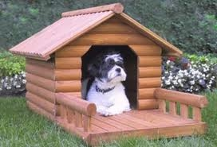
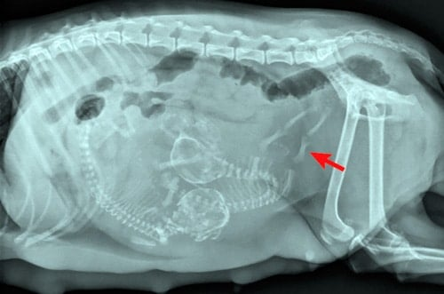

Detalles sobre los perros
Hábitat del perro
La mayoría de estos mamíferos viven en lugares templados, aunque algunos de ellos cuentan con la propiedad de ser resistentes a temperaturas muy bajas, pudiendo vivir cómodamente en estos lugares. Este animal no suele exigir un ambiente determinado para su sobrevivencia, por lo cual es común que se adapte a todo tipo de climas. Aun así, siempre es recomendable darle condiciones óptimas y un área donde no se vea afectado por el estrés o el encierro.
| Perro doméstico | Perro salvaje |
|---|---|
| El perro actualmente solamente puede vivir, de forma óptima, en sitios urbanos o en lugares que estén supervisados por el hombre, debido a que este animal no cuenta con propiedades de supervivencia o de defensa ante depredadores. | Los perros salvajes suelen tomar un comportamiento agresivo y difícil de domesticar. Los mismos suelen vivir en cuevas o madrigueras. Algunos pueden encontrarse en áreas cercanas al hombre, debido a que les favorece su supervivencia. |
Reproducción del perro
El perro es un animal vivíparo y con dos sexos. De esta manera, la madurez sexual tanto del macho como de la hembra culminaría aproximadamente a los 12 meses de edad. Luego de ello, la perra comienza a estar en celo y a buscar un macho con quien aparearse.
Gestación
 El período de gestación del perro hembra suele durar un tiempo no mayor a 63 días. En cuanto a la cantidad de cachorros que se puede parir, el número varía entre los 4 y los 12, todo dependiendo de la raza de perro. Hay algunas razas que son imposibles de reproducir de forma natural, por lo cual deben acudir a la inseminación artificial. Todo esto se debe al hecho de que algunas razas han tenido que pasar por la conocida selección artificial. Esto último ha hecho que se tomen medidas para evitar la reproducción selectiva que pueda perjudicar su reproducción.
Origen de la domesticación
Todos algunas vez nos hemos preguntado desde cuándo los perros han sido considerados un animal doméstico. La respuesta es que su domesticación se remonta a alrededor de 40.000 años, específicamente en las zonas de Europa finalizando el periodo Neolítico, dando origen a la especie que conocemos en la actualidad como Canis Lupus Familiaris. De este mamífero a través del tiempo se han conocido alrededor de 800 razas diferentes tomando en cuenta sus tamaños y características morfológicas, presumiendo que este animal es una subespecie del lobo.
Comportamiento del perro
Los perros son animales que poseen un alto grado . lo que le permite adaptarse al entorno, aprender rápidamente y resolver problemas. Además son animales sociables que siempre interactúan con el entorno que los rodea, entendiendo las reglas que debe seguir. Al controlar correctamente esta habilidad aprenderá a comportarse de manera tranquila y receptiva con las personas, es esto lo que lo hace la mascota ideal.